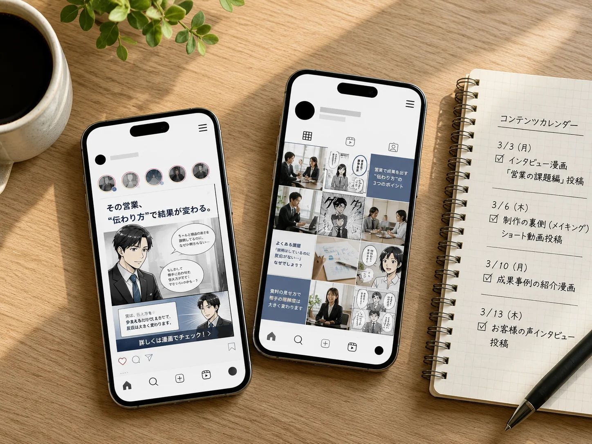

実績の数字
数字で見る、ビズ採用の成果。
採用クリエイティブの参考実績
-
応募数
1.8倍
掲載の前後で比較
-
スカウト返信率
58%
クリエイティブを添えた場合
-
応募単価
約1/3
掲載前後のCPA推移
-
内容の理解度
79%
閲覧後アンケート
出典：自社実績（2025年度／導入企業での測定値）。対象社数・測定期間・分母は、商談時に個別でご提示します。
課題ナビ
いまの悩みから、
次の一手を選ぶ。
よくある採用のつまずきを、
改善ルート別に整理しました。

市場の変化
会う前に、
すでに調べられている。
現代の候補者は、応募する前にSNSで社名を検索し、口コミサイトでリアルな声を確認し、生成AIや検索で企業の情報を収集しています。
採用は、出会う前から始まっています。
-
85.8%
SNSで
社名検索 -
72.8%
SNS・口コミ
で検索 -
76.2%
就活で
生成AIを利用
出典：85.8%＝株式会社リソースクリエイション「26卒におけるSNS就活についての実態調査」（26卒就活生747名）／72.8%＝株式会社ファングリー調べ（2026年1月・就職／転職活動者412名）／76.2%＝ナイル株式会社「就職活動での生成AI活用実態調査」（就活生419名）※85.8%・76.2%は新卒就活生を対象とした調査です。
05 仕組み
求人票だけの採用を、理解される採用へ。
ただ募集するだけでは、違いは伝わりません。
ビズ採用は、会社のリアルを整理し、応募前の理解につながる情報設計に変えます。
従来の採用
- 求人票だけ 仕事内容や条件だけの情報になりがち。
- 情報が薄い 会社のリアルな魅力が伝わらない。
- 比較で埋もれる 他社との違いが見えず、候補者の印象に残りにくい。
ビズ採用の仕組み
- 01 取材 経営者・社員に取材し、現場のリアルな声を集めます。
- 02 設計 集めた情報を整理し、応募前の理解につながるストーリーを設計します。
- 03 制作 インタビューや写真をもとに、魅力が伝わる採用コンテンツを制作します。
- 04 露出最適化 作ったコンテンツを最適なメディアで届け、見つかりやすさを高めます。
応募前に伝わる採用
- 仕事の中身が見える 具体的な業務や1日の流れがわかる。
- 人や空気が伝わる 一緒に働く人や職場の雰囲気がイメージできる。
- 応募の納得度が上がる 入社後のミスマッチが減り、前向きな応募が集まりやすくなります。
- 見つかる 検索で見つけてもらえる
- 伝わる 会社の魅力がしっかり伝わる
- 選ばれる 納得した人からの応募が集まる
06 3つの改善ルート
3つのルートから、
いま必要な一手を選ぶ。
課題の違いに合わせて、
改善の入口を分けています。
求人広告改善
見つけてもらい、惹きつける。
- クリックはあるが応募につながらない
- 求人票だけでは仕事内容が伝わらない
応募課金型改善
費用を見直し、応募の質を整える。
- 採用コストが重い
- 応募の質にばらつきがある
検索対策
検索・AIで見つかる情報設計へ。
- 社名検索で情報が少ない
- 会社の魅力が伝わらない
※検索順位や、生成AIに推薦されることを保証するものではありません。
07 導入事例
成果につながった企業の変化を、
導入事例で紹介。
実際にご利用いただいた企業の事例から、採用課題の解決プロセスと成果をご紹介します。

株式会社トラム様
12店舗を展開する飲食企業。広告費をかけても応募・採用につながらず、採用単価が150万円まで上がっていました。
応募が集まらない
採用単価が高い
求人票が機能しておらず、広告費が採用に結びついていなかった。
求人票の全面改訂
KPI調査・競合調査をもとに求人票を作り直し、週次で運用を管理。
月間応募数 約52倍
採用単価 92%減

株式会社アール・アソシエイツ様
給与条件を変えずに、応募数と単価の両方を改善。
応募が月10名
求人票の全面改訂
応募数 5.4倍

株式会社カネダイ大橋牧場様
1年間応募0名から、3か月で63名の応募に。
1年間、応募0名
求人票の全面改訂
応募数 63名
※各社の支援当時の実績です。成果を保証するものではありません。
導入企業に共通する
3つの変化
- 見つかる 求める人材に、きちんと見つけてもらえる。
- 伝わる 仕事内容や魅力が、正しく伝わる。
- 応募につながる 共感した人からの応募が増える。
08 料金
課題に合わせて選べる、
シンプルな料金設計。
貴社の課題や目指す採用規模に合わせて、
最適なプランをご提案します。
-
PLAN 01
ライト
月額19.8万円
- 漫画 1本
＋ 制作・配給・レポート
-
おすすめ
PLAN 02
スタンダード
月額34.8万円
- 漫画 1話
- アニメ 1本
＋ 制作・配給・レポート
-
PLAN 03
フル
月額58.9万円
- 漫画 1話
- アニメ 1本
- 記事 増量
＋ 制作・配給・レポート
※広告費・応募課金は別建てです。
09 導入の流れ
最短3週間で、
応募前に見える採用をスタート。
ヒアリングから公開まで、専任のチームが一貫してサポートします。
はじめての方でも安心してご利用いただけます。
-
01ヒアリング・企画設計
貴社の採用課題や目的、求める人物像などをヒアリングし、最適な企画をご提案します。
-
02取材・撮影

社員インタビューや職場の様子を取材・撮影し、会社のリアルな魅力を収集します。
-
03制作
取材内容をもとに、動画・記事・デザインなど採用コンテンツを制作します。
-
04公開・運用サポート

完成したコンテンツを最適なメディアで公開し、応募につながる導線を整えます。
-
05効果検証・改善
公開後のアクセスや応募状況を分析し、継続的な改善で成果を最大化します。
※ご契約から1本目の納品まで3週間〜1ヶ月が目安です。
はじめての方でも
安心のサポート体制
- 専任担当が伴走 企画から運用まで一貫サポート
- 初めてでも安心 丁寧な説明で不安を解消
- 公開後も継続支援 改善提案で成果を最大化